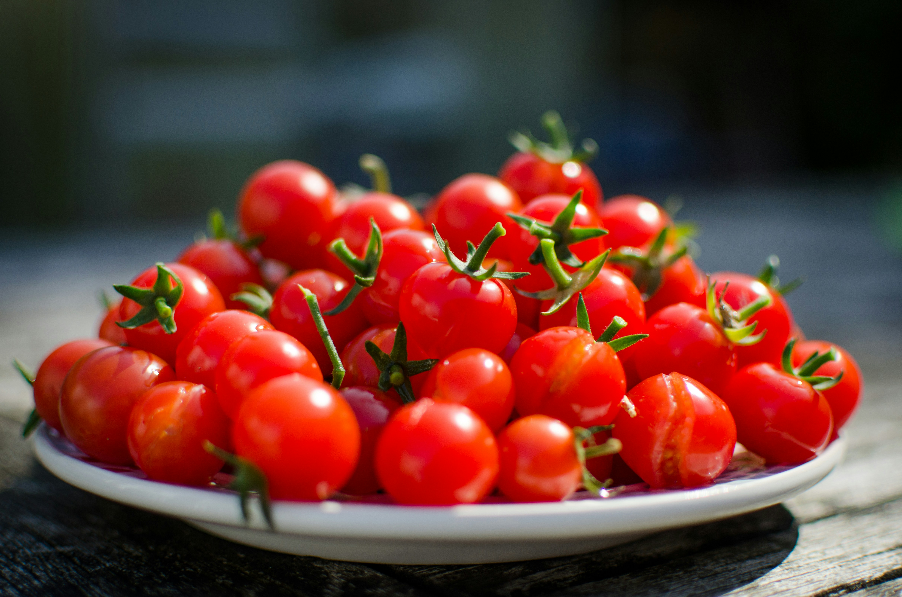

Home
Tomato Salad

Description
This is a really simple salad that takes just minutes to prepare but backs a spicy sweet punch. Perfect to pair with Spanish Omelette and Fried Green Beans.
Ingredients
- Loads of beautifully ripe delicious tomateos - it's great to get a mix of sizes and varities
- Lots of fresh basil, roughly chopped
- 1 or half a garlic clove depending on how much you like garlic
- A great glug of good quality extra virgin olive oil
- Lots of salt and pepper
Steps
- Cut the tomatoes into bite size chunks and add to large mixing bowl.
- Add the basil to the mixing bowl.
- Using a microplanar grater, careful grate the garlic clove directly into the bowl.
- Spalsh the olive oil all over.
- Add a decent pinch of salt and pepper to taste - tomatoes can handle a decent amount of salt so be liberal, but taste as you go!
- Mix the salad throughly and serve immediately.
- Enjoy!